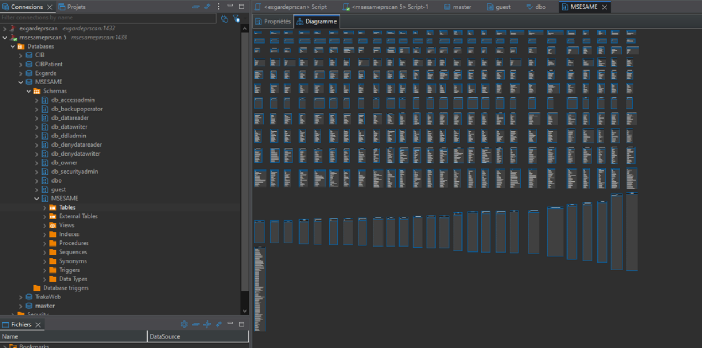
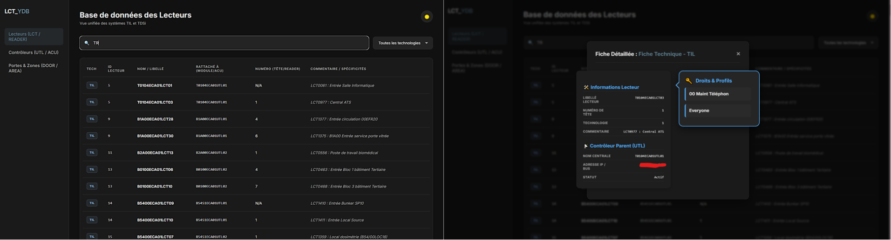

Outil Web de Diagnostic & API Multi-Serveurs
Conception de A à Z d'une architecture client-serveur permettant de centraliser et d'unifier en temps réel les données de deux technologies de contrôle d'accès hétérogènes (TIL et TDSI). Remplacement d'une solution Excel obsolète par une application web robuste hébergée sous Linux.
01. Contexte & Limites de l'existant
Le support technique nécessitait un accès rapide aux informations des lecteurs de badges et de leurs contrôleurs. Historiquement, j'avais développé un outil basé sur Excel et Power Query (18 feuilles, +14 000 cellules). Face à la volumétrie croissante, ce système a montré des limites critiques : instabilité, asynchronisme et risque d'erreur humaine.
Il a donc fallu pivoter vers une solution pérenne : interroger directement les bases de données propriétaires de l'hôpital en temps réel via une interface web unifiée.
02. Conception & Architecture Logicielle
La difficulté majeure résidait dans l'absence de schémas relationnels et les différences de logique entre les bases MSESAME (TIL) et Exgarde (TDSI). J'ai procédé à une rétro-ingénierie des bases SQL pour normaliser les données.

- Backend (Python / FastAPI) : Développement d'une API REST s'exécutant sur un serveur Linux, utilisant
pyodbcpour dialoguer avec les bases Microsoft SQL Server. - Frontend (HTML / JS Vanilla) : Choix délibéré d'éviter les gros frameworks (React/Angular) pour limiter la dette technique et faciliter la reprise du code après mon alternance.
- Communication asynchrone : Utilisation de requêtes
fetch()en Javascript pour une actualisation des données sans rechargement de page.
03. Défis Techniques & Résolution
Le développement de cet outil "sur-mesure" a nécessité la résolution de plusieurs problématiques complexes, tant sur l'aspect algorithmique que système :
- Logique de "Reverse Lookup" : Pour l'onglet des profils d'accès, il a fallu concevoir des requêtes SQL imbriquées complexes (TDSI) permettant de partir d'un groupe d'accès pour lister dynamiquement toutes les portes et lecteurs autorisés.
-
Débogage système (Erreur 503) : Isolation et résolution d'un crash de l'API en production en traquant les processus fantômes (
pkill) et en analysant les journaux de logs d'Uvicorn exécutés en tâche de fond (nohup). -
Sérialisation JSON (Performance) : Afin d'éviter de multiplier les requêtes réseau, les données complètes de chaque équipement sont sérialisées dans les attributs
data-completdu DOM HTML, puis désérialisées (JSON.parse) lors du double-clic pour affichage instantané.
04. Résultat Final & Impact
L'outil est aujourd'hui déployé sur le réseau de l'hôpital. Il s'est révélé particulièrement critique lors d'une récente campagne de production de badges, permettant d'identifier en quelques secondes les incohérences de droits d'accès.
